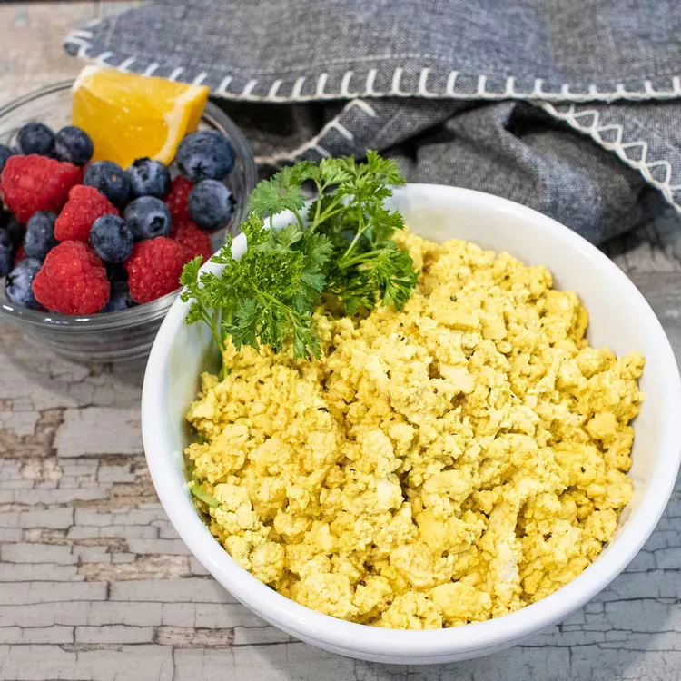

Vegan Scramble

Description
Scrambled tofu "eggs"… yes, please! If you have recently started a vegan diet and are missing a comforting breakfast, here you go!
Scrambled tofu has the texture of scrambled eggs and can be mixed with your favorite veggies to make a delicious breakfast scramble.
Ingredients
- olive oil cooking spray
- 1 (16 ounce) package firm tofu, drained and patted dry
- 1 tablespoon nutritional yeast
- ½ teaspoon salt
- ½ teaspoon garlic powder
- ¼ teaspoon ground turmeric
- 2 tablespoons almond milk
- salt and ground black pepper to taste
Steps
- Generously spray a skillet with olive oil cooking spray and heat over medium heat.
Add tofu, using your hands to crumble the block into smaller pieces; cook for 4 minutes.
- Stir in nutritional yeast, 1/2 teaspoon salt, garlic powder, and turmeric.
Cook until seasonings have been incorporated, breaking tofu apart with a spatula to desired consistency, about 1 minute. Stir in almond milk and cook until absorbed, about 2 minutes.
Season with salt and pepper and serve warm.
Home Page